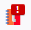

FritzBox
Windows
Linux

bedeutet, dass irgend etwas mit CallMonitor nicht stimmt. Der Fehlerbereich kann von der PY-Datei bis hin zu Einstellung der FritzBox sein.
Führe in den Einstellungen den Python-Test durch, um genauere Informationen zu erhalten.
FritzBox
Bei der FritzBox müssen noch einige Vorkehrungen getroffen werden:
- Zum Anzeigen der Anrufliste wird folgendes benötigt:
- Es wird ein Benutzerkonto benötigt, welches auf die Anrufliste Zugriff hat (s. hier)
- Um mit den Addon Nummern anwählen zu können, muss die Wahlhilfe aktiv sein (s. hier unter den Punkt "FRITZ!Box für Zugriff von Anwendungen einrichten")
- Für den CallMonitor muss der Port 1012 von der FritzBox freigeschaltet werden. Das kann man durch anwählen der Nummer #96*5* mittles Telefon erreichen. Mit der Nummer #96*4* lässt sich dies wieder sperren.
- Um mit dem Addon Nummer anwählen zu können, muss die Wahlhilfe aktiviert sein (s. hier)
Windows
Lade in den Einstellungen die Zip-Datei herunter, indem du auf "Dateien downloaden" klickst.
Entpacke die Zip-Datei an einem Ort deiner Wahl.
Am besten ist, man lässt alle Dateien in dem einen Ordner. Andernfalls muss man in den Dateien
die Pfade dementsprechend anpassen (unterschiedliche Schreibweise beachten).
Die Kaskade läuft folgendermaßen ab:
Firefox ⇒ Registry ⇒ JSON-Datei ⇒ BAT-Datei ⇒ PY-Datei bzw.
Firefox ⇒ Registry ⇒ CallMonitor.json ⇒ CallMonitor_win.bat ⇒ CallMonitor.py
Weitere Infos findest du hier: Native_manifests
In dem Ordner befindet sich eine Datei namens "RegGenerator.vbs". Diese Datei erstellt eine Datei
namens "link.reg". Wenn man diese Reg-Datei dann ausführt, setzt sie ein Verweis zu der
CallMonitor.json-Datei, damit Firefox zum arbeiten weiß, wo die Datei ist. Daher ist es wichtig, dass
sich die VBS-Datei im selben Ordner wie die JSON-Datei befinden, bevor man sie ausführt.
Zusammenfassung:
- VBS-Datei im gleichen Ordner wie die JSON-Datei
- VBS-Datei ausführen ⇒ Reg-Datei erhalten
- Reg-Datei ausführen ⇒ Ein Verweis zu CallMonitor.json gesetzt
Mit der Datei "CallMonitor_win.bat" kann man schauen, ob sich die PY-Datei ausführen lässt.
Im Normalfall sollte nun im Fenster "Python started" stehen.
Sollte stattdessen eine Meldung erscheinen, "Der Befehl "python" ist entweder falsch geschrieben [...]" oder Python was not found; run without arguments [...] muss in der
Umgebungsvariable noch der Pfad zur python.exe eingetragen werden. Um Konflikte zu vermeiden, sollte man diesen Pfad möglichst an erste Stelle setzen. Eine Benutzervariable sollte ausreichen. Anschließend sollte auch der Browser
neu gestartet werden, um die Änderung zu übernehmen.
Alternatiev kann man die Datei "set_python_path.bat" ausführen, die dann die Umgebungsvariable setzt.
Linux
Lade in den Einstellungen die Zip-Datei herunter, indem du auf "Dateien downloaden" klickst.
Entpacke die Zip-Datei in den Ordner ~/.mozilla/native-messaging-hosts/
Die Kaskade läuft folgendermaßen ab:
Firefox ⇒ JSON-Datei ⇒ PY-Datei bzw.
Firefox ⇒ CallMonitor.json ⇒ CallMonitor.py
Weitere Infos findest du hier: Native_manifests
Nun müssen noch ein paar Anpassungen bei den neuen Dateien vorgenommen werden:
Gehe dazu in das Verzeichnis ~/.mozilla/native-messaging-hosts/
Die Anpassungen kann die "fix.sh" Datei erledigen, in dem man sie ausführt oder man macht es eigenständig.
In der Datei "CallMonitor.json" muss bei "path" der absolute Pfad zur "CallMonitor.py" angegeben werden. (Ersetze das ~ durch den Home-Pfad, wenn diese im gleichen Ordern wie die "CallMonitor.json" ist)
Die "CallMonitor.py" muss ausführbar gemacht werden (sofern sie es nicht bereits ist).
Zusammenfassung:
- Im "CallMonitor.json" unter "path" den absoluten Pfad zur "CallMonitor.py" Datei setzen
- "CallMonitor.py" muss ausführbar sein
Um zu prüfen, ob die PY-Datei funktioniert, reicht es, wenn man diese im Terminal ausführt.
Im Normalfall sollte nun im Fenster "Python started" stehen.